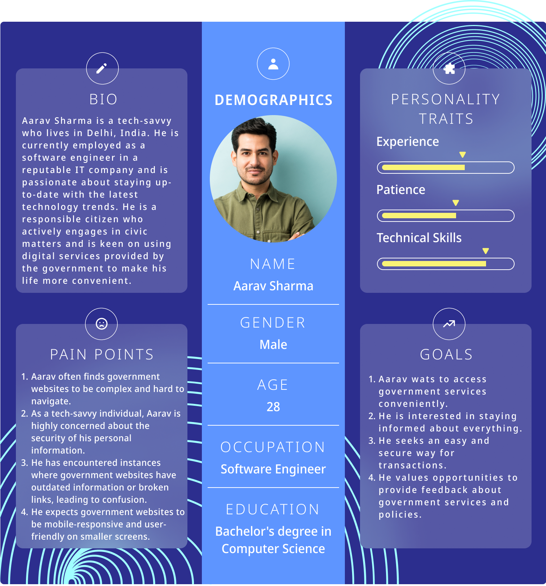
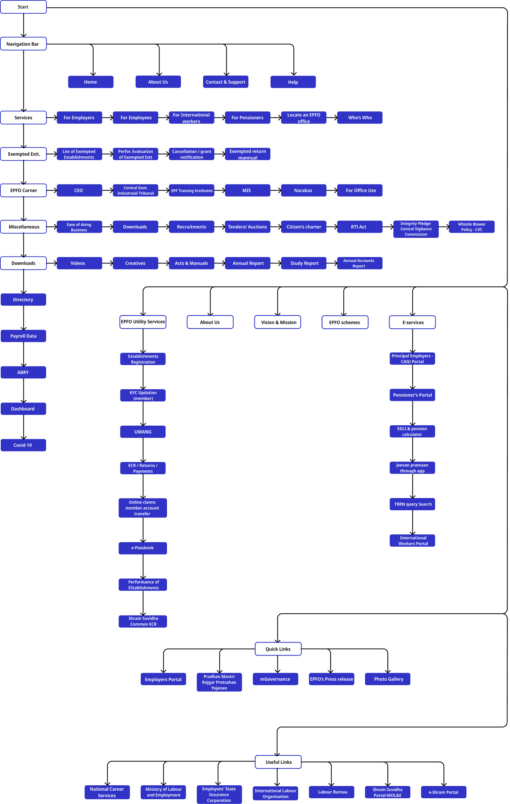
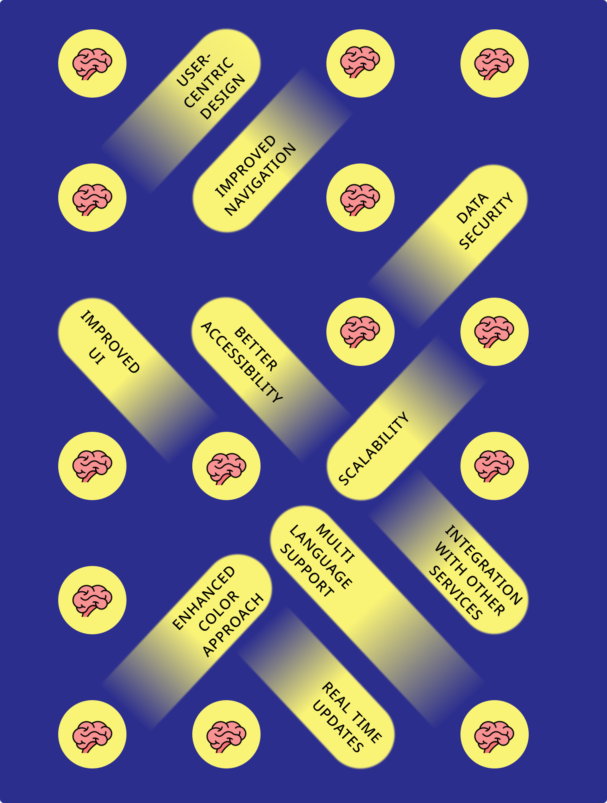
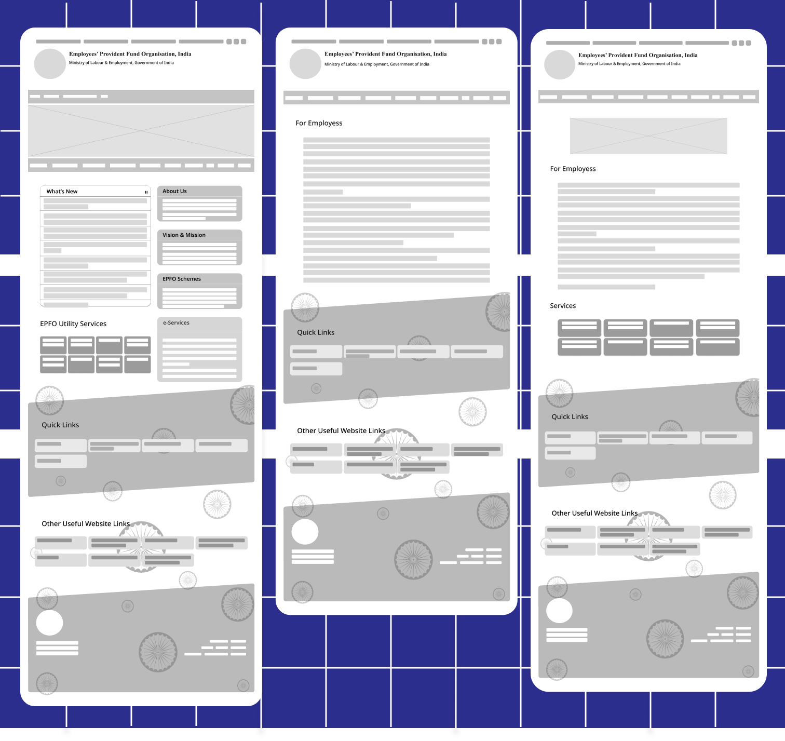
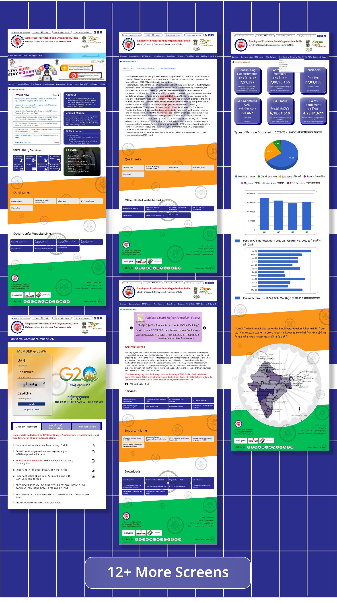
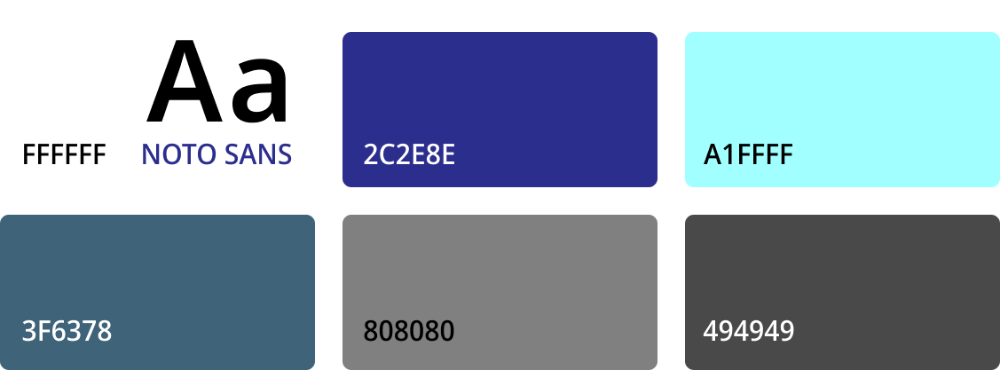
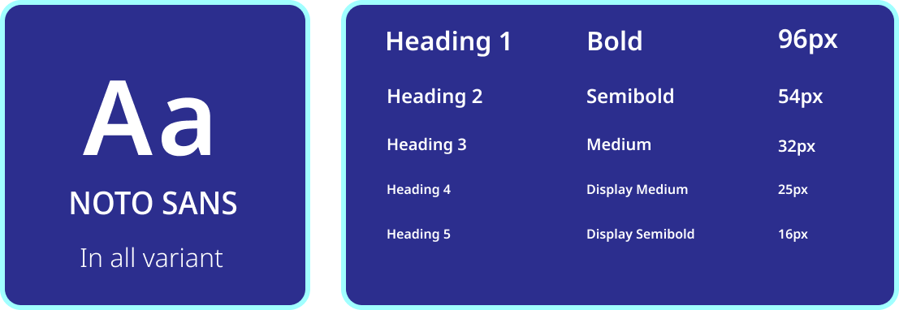

EPFO Website Redesign
- Insurance,
- Government
02 Weeks
UX/UI Designer
30+
About EPFO
The Employees' Provident Fund Organisation (EPFO) is one of the two main social security organization under the Government of India's Ministry of Labour and Employment and is responsible for regulation and management of provident funds in India, the other being Employees' State Insurance. The EPFO administers the mandatory provident fund, a basic pension scheme and a disability/death insurance scheme. It also manages social security agreements with other countries.
Why to Redesign?
This project aims to enhance the user experience (UX) of the digital platform, providing citizens with a more efficient, intuitive and user-friendly interface ensuring that valuable government information and services are easily accessible to all without any hassle.
Main Challenges
Update UI
What motivated you to visit a pet adoption website? Are you looking to adopt a pet, or are you browsing for other reasons?
Improve UX
Enhancing user experience by reimagining the way how citizens interact with government services and information online and empowering individuals with a seamless digital experience.
Increase Accessibility
Ensuring accessibility for all citizens by motivating all members of our community to engage with government resources, information, and services equitably and without barriers.
Target Audience
The Government EPFO website has a wider range of aspect for audiences, this website aims to provide a seamless and user-centric experience for a diverse set of audiences, including employees, employers, retirees, government agencies, and various other stakeholders. Clear and accessible information, intuitive navigation, and mobile responsiveness should be top priorities in the redesign process.
Problem
The existing Employees’ Provident Fund Organization (EPFO) website faces several usability
and functionality challenges, hindering its ability to efficiently serve the needs of its
stakeholders, including employees, employers, and pensioners.
The EPFO website should be user-friendly, secure, and efficient online platform that enhances
accessibility and transparency while providing a seamless experience for all users.
There are three major issues causing the problem:
- Users feel confused : Inconsistencies in design and layout across different sections of the website can confuse users. Website should aim for a cohesive and standardized design that maintains consistency throughout the process.
- Users feel lost : For multi-step processes like filing claims, provide clear progress indicators to show users where they are in the process and what steps are next.
- Users feel irritated : An outdated or unattractive design can make users less inclined to engage with the website. Modern, user-friendly design is essential for keeping users interested and engaged.
Solution
The redesign of the EPFO website should aimed at improving user experience, efficiency,
and accessibility for all stakeholders making website user-friendly.
By addressing these key objectives, the new website will become a valuable resource for employers,
employees, and pensioners, enabling them to manage their provident fund accounts and transactions
with ease and confidence.
Goal
To make website more user-friendly, intuitive, clear navigational flow and accessible for all users.
UNDERSTANDING THE USER:
User Research
For user research on the Employees' Provident Fund Organisation (EPFO) website for the Indian government, I’ve conducted some Interview Questions which are useful for gathering insights that can help improve user experience and address users' needs. Here are some interview questions tailored for this purpose:
- Can you tell me about your job and how frequently you interact with the EPFO website?
- What are your primary reasons for visiting the EPFO website?
- How would you describe your overall experience with the EPFO website?
- Can you share any specific positive or negative experiences you've had while using the website?
- How easy is it for you to find the information you need on the EPFO website?
- Are there any specific features or information that you find difficult to locate on the website?
- Can you describe your experience with the registration and login process on the EPFO website?
- What specific tasks do you usually perform on the EPFO website?
- Are there any functionalities or services you wish were available on the website but currently are not?
- Do you access the EPFO website using a mobile device? If so, how would you rate the mobile experience compared to the desktop version?
- Are there any specific accessibility issues you've encountered?
Problem Statement
Aarav is an software engineer who has a keen interest in using government digital services and likes to stay updated with the services because he wants to conveniently access the website.
Persona
REIMAGINING THE WEBISTE FLOW:
Information Architecture
Idea Brainstorming
Wireframing
Before rolling out the final design, I’ve redesigned the website and created a wireframe which serves the quality of a visual guide for the layout and functionality before the actual design and development phases begins. The prototype outlines the key features and functionality of the website and make the website easy to use with clean and intuitive user design.
MAJOR DESIGN ITERATIONS
⭐ Iteration 1. Redesign of Home page

⭐ Iteration 2. Focusing on Cleaner UI

SCREEN VIEW
COLOR GUIDE
Aesthetic high-quality fonts with multiple weights and widths blended perfectly with associated colors making designs simple and readable to everyone.
TYPOGRAPHY
Typography is the art and technique of arranging and designing text to make it visually appealing and legible.
